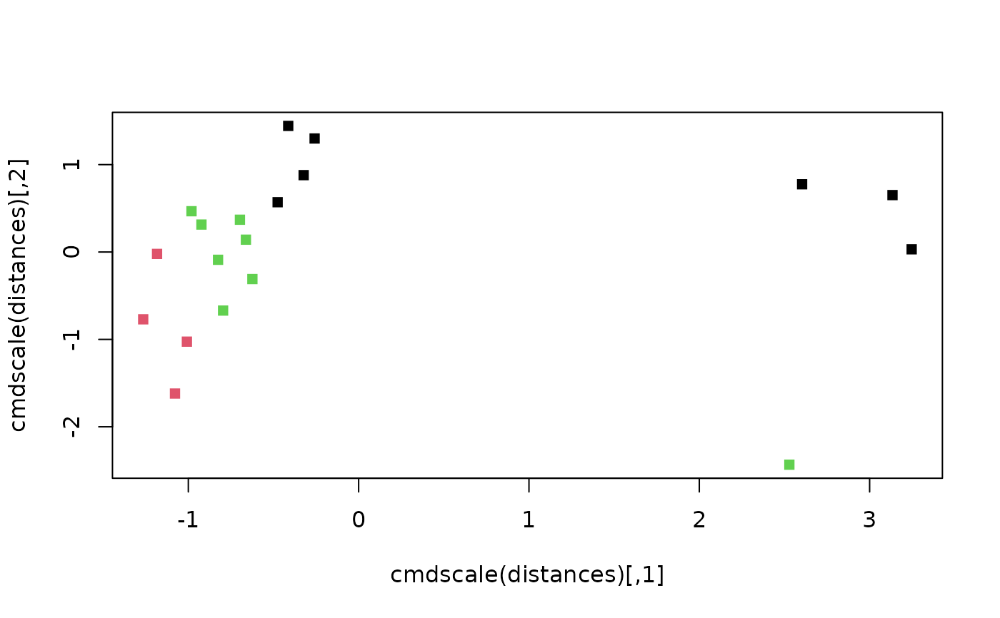
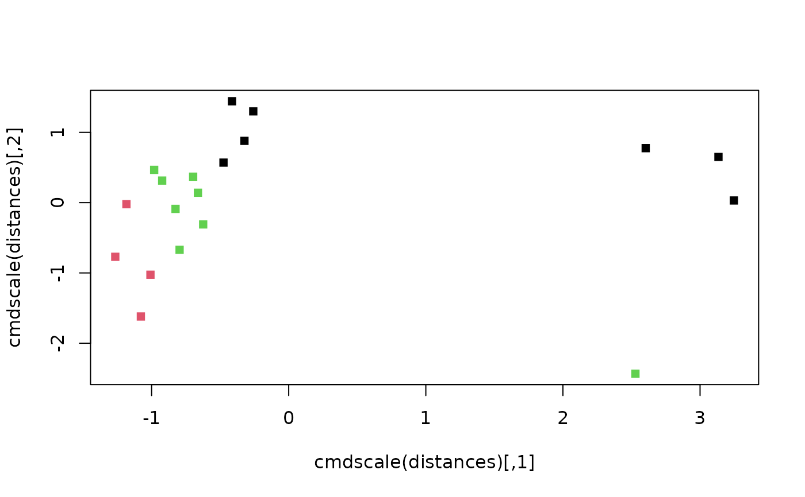

Spectral clustering emphasizes nearest neighbours when forming clusters; it avoids some of the issues that arise from clustering around means / medoids.
Value
SpectralEigens() returns spectral eigenvalues that can then be
clustered using a method of choice.
See also
Other tree space functions:
Islands(),
MSTSegments(),
MapTrees(),
MappingQuality(),
cluster-statistics,
median.multiPhylo()
Author
Adapted by MRS from script by Nura Kawa
Examples
library("TreeTools", quietly = TRUE)
trees <- as.phylo(0:18, nTip = 8)
distances <- ClusteringInfoDistance(trees)
eigens <- SpectralEigens(distances)
# Perform clustering:
clusts <- KMeansPP(dist(eigens), k = 3)
plot(eigens, pch = 15, col = clusts$cluster)
 plot(cmdscale(distances), pch = 15, col = clusts$cluster)

plot(cmdscale(distances), pch = 15, col = clusts$cluster)
